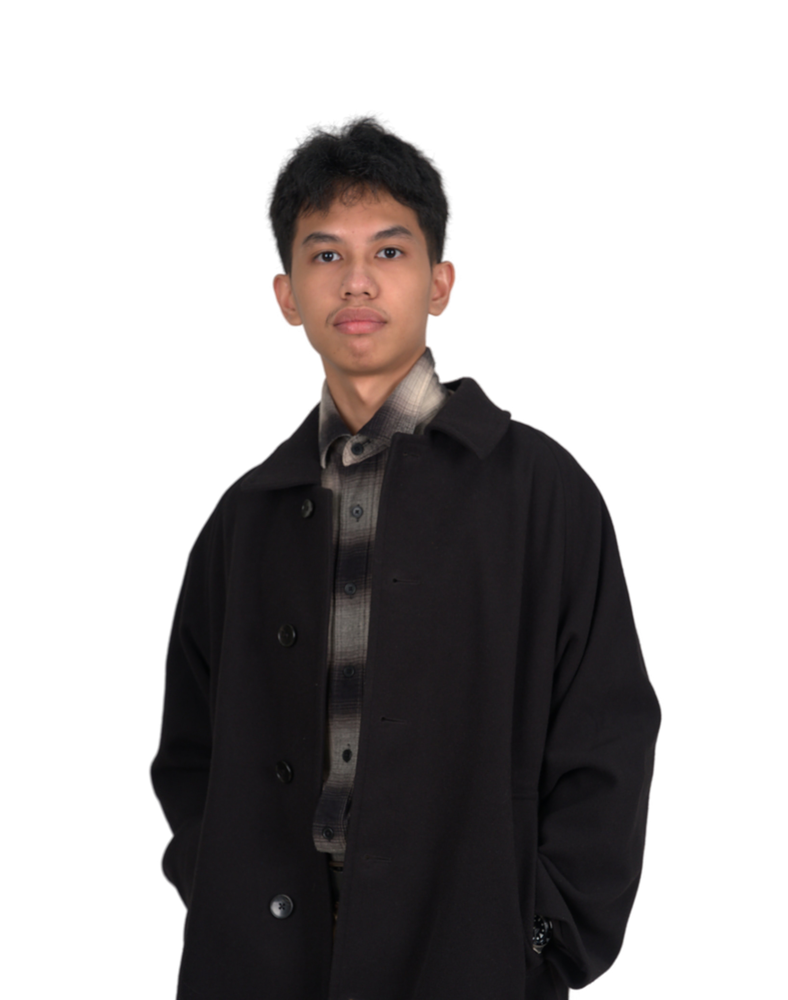

The Team
The Origin of DEV FUNC: KODE PLAY
Core Team

Jan Allen O. Calayan
Lead Backend Architect
3rd-year Computer Science student at FEU Institute of Technology. Drives the Trickle-Down Method and the core data reconciliation engine of the G.R.A.S.Y.A. framework.
Nicole John L. Paquibot
Backend Engineer
Specializes in distributed database systems and scalable yield operations, ensuring server-side fault tolerance and seamless data pipeline synchronization.
Russel Rome F. Nadales
Frontend Lead & Project Manager
Oversees project timelines and client-side architecture. Translates complex system metrics into clear, actionable interfaces for seamless modernization tracking.
Grant Gabriell R. Ostol
Frontend Engineer & Asst. Manager
Focuses on user experience and interface deployment. Acted as the early catalyst for the framework's core concept, keeping the original vision grounded throughout development.
Academic Mentor

Kim Giselle A. Bautista
Thesis Adviser & Faculty Mentor
Providing critical guidance on system architecture, academic methodology realism, and cryptographic validation integration at FEU Institute of Technology.